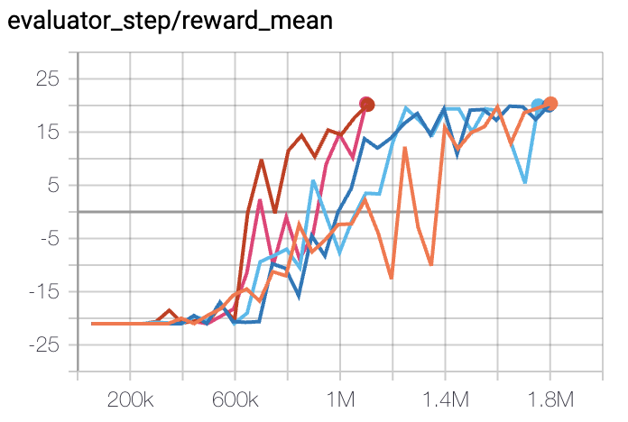
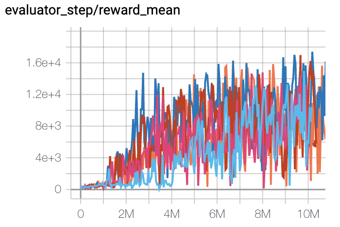

PPG¶
Overview¶
PPG was proposed in Phasic Policy Gradient. In prior methods, one must choose between using a shared network or separate networks to represent the policy and value function. Using separate networks avoids interference between objectives, while using a shared network allows useful features to be shared. PPG is able to achieve the best of both worlds by splitting optimization into two phases, one that advances training and one that distills features.
Quick Facts¶
PPG is a model-free and policy-based RL algorithm.
PPG supports both discrete and continuous action spaces.
PPG supports off-policy mode and on-policy mode.
There are two value networks in PPG.
In the implementation of DI-engine, we use two buffers for off-policy PPG, which are only different from maximum data usage limit (data
max_use).
Key Graphs¶
PPG utilizes disjoint policy and value networks to reduce interference between objectives. The policy network includes an auxiliary value head which is used to distill the knowledge of value into the policy network, the concrete network architecture is shown as follows:

Key Equations¶
The optimization of PPG alternates between two phases, a policy phase and an auxiliary phase. During the policy phase, the policy network and the value network are updated similar to PPO. During the auxiliary phase, the value knowledge is distilled into the policy network with the joint loss:
The joint loss optimizes the auxiliary objective (distillation) while preserves the original policy with the KL-divergence restriction (i.e. the second item). And the auxiliary loss is defined as:
Pseudo-code¶
on-policy training procedure¶
The following flow charts show how PPG alternates between the policy phase and the auxiliary phase

Note
During the auxiliary phase, PPG also takes the opportunity to perform additional training on the value network.
off-policy training procedure¶
DI-engine also implements off-policy PPG with two buffers with different data use constraint (max_use), which policy buffer offers data for policy phase while value buffer provides auxiliary phase’s data. The whole training procedure is similar to off-policy PPO but execute additional auxiliary phase with a fixed frequency.
Extensions¶
PPG can be combined with:
GAE or other advantage estimation method
Multi-buffer, different
max_use
PPO (or PPG) + UCB-DrAC + PLR is one of the most powerful methods in procgen environment.
Implementation¶
The default config is defined as follows:
The network interface PPG used is defined as follows:
Benchmark¶
environment |
best mean reward |
evaluation results |
config link |
comparison |
|---|---|---|---|---|
Pong
(PongNoFrameskip-v4)
|
20 |
 | DI-engine PPO off-policy(20)
|
|
Qbert
(QbertNoFrameskip-v4)
|
17775 |
 | DI-engine PPO off-policy(16400)
|
|
SpaceInvaders
(SpaceInvadersNoFrame skip-v4)
|
1213 |

|
DI-engine PPO off-policy(1200)
|
References¶
Karl Cobbe, Jacob Hilton, Oleg Klimov, John Schulman: “Phasic Policy Gradient”, 2020; arXiv:2009.04416.